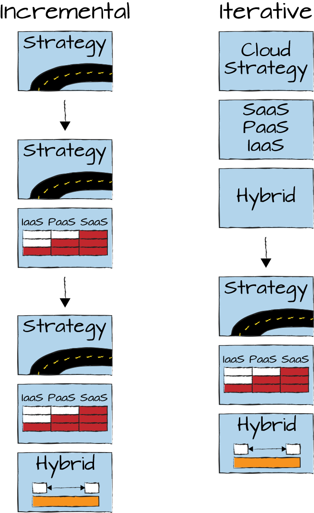

Got Git?
Much has (rightly) been said and written about the differences between IT architecture and classic building architecture, which we often refer to in our metaphors. For example, although buildings do evolve over time (just very slowly1), achieving high rates of change at low cost is something that brick-and-mortar objects can’t do. But many things can, and it’s not at all limited to software development.
Enterprises spend significant effort creating, revising, and sharing documents, be they strategic plans, schedules, design documents, or status reports (Chapter 30). Typically, these documents need input from multiple parties and undergo iterations and quality checks until they are released. Such artifacts are really a form of software—they surely aren’t hardware, even though they may be printed on physical paper on occasion (witnessing someone print 25 copies of a large slide deck on digital transformation will forever be burned into my mind).
So, if documents are in fact software, if we want to optimize and accelerate our collaboration and communication, we might be able to learn a bit by looking at how software delivery teams, especially widely distributed open source teams, work.
The one tool you won’t be able to pry out of any developer’s dead cold hands is version control (Chapter 14). Version control is the safety net that gives developers the confidence to move fast because they have the assurance that they can revert quickly in case they take a wrong turn. One of the most popular version control tools these days is Git. The model behind this software takes some getting used to, but once you adapt your flow, you’ll never want to go back to anything else.
I wrote the precursor to this book in Markdown,2 a simple text format. I used Git for version control and Dropbox for file synchronization with the publishing engine. After the book was published, I kept ideas for additional chapters (like this one) in a backlog. Without thinking too much about it, I reverted to writing the backlog in Microsoft Word as these chapters weren’t done and weren’t going to be published soon.
I instantly noticed that my rate of progress slowed down: should I remove or rewrite this paragraph? What if I change my mind later and want to keep it? I better make a copy and “park” it somewhere for later. By the way, where did I keep the latest version? Should I use the Track Changes feature instead? When working with text files and version control, I would not have spent a second on any of this because I’d be assured that I could revert to a prior version at any time. I’d also be able to see all the changes I made over time, so I could track progress easily.
Of course, I could have checked my Word documents into Git or a document management system like Microsoft SharePoint. However, two main factors would be missing: first, version comparison between Word files is much more laborious than on simple text files. Word’s review mode tracks history but is much more geared toward minor revision changes as opposed to iterative creation of a document. More important, the build tool chain to produce the book works with Markdown files, so I would not enjoy the benefits of Continuous Integration, meaning I can create a preview copy of the book any time I make a change.
Anyone who has looked at a corporate file server notices that I am not the only one who appreciates version control. You’ll find 20-some copies of the same document, with the filename either suffixed with a version number, prefixed with the date (for easy sorting), tagged with the last author’s initials to indicate branching, etc. Someone had the right idea but stumbled in the implementation.
Version control is a powerful tool, if all team members look at the same version. Emailing documents around that are kept on local drives means that each person has their own source of truth, which is going to lead to friction in the best case and lost information in the worst. Therefore, version control must be coordinated among team members.
The most transformative change in collaboration patterns I have witnessed was the advent of Google Docs (then called “Writely”) around 2006, and it wasn’t due to my seven years of drinking Google Kool-Aid. Google Docs popularized a browser-based document editing model that allows multiple users to simultaneously edit the same document. Interestingly, when Google Docs first became available internally at Google for dogfooding (Chapter 37), its feature maturity resembled that of Microsoft Word 5.0 from 1989. Getting two bullet points to be the same size was already a challenge.
Still, being able to collaborate in real time on a shared document fundamentally changed the way people worked together. No time was wasted on maintaining, mailing, finding, or merging multiple versions of documents. Almost all “my version versus your version” discussions went away as it was clear that the team worked toward a single shared outcome. Adding collaborators became easy and natural. Having had to go back to sharing Word and PowerPoint documents by email has been a rather frustrating experience.
Most version control tools allow branching. Branches are separate versions of the codebase, often used to develop a special feature that’s not yet ready to be released. The major advantage of branching is that a person working in a branch can make many changes without having to worry about what else is going on. Alas, that freedom is usually short lived. Sooner or later, the branch must be “merged” back into the authoritative version, also called the trunk, following the analogy of a version “tree.”
Unfortunately, while a person was working in the branch, time wasn’t actually standing still: many other changes occurred to the documents or source code. As a result, merging becomes a rather unpleasant and often wasteful exercise: perhaps someone copyedited the paragraph that you just rewrote. That’s wasted effort! Also, while you are working in your branch, no one else can benefit from what you have done. If branches remind you of locally stored document versions, you are onto something. A version control system where each person works in their own branch doesn’t really help much in terms of collaboration.
As a result, many folks advocate trunk-based development,3 an approach that mandates all changes going into a single authoritative version of the codebase or document. Naturally, doing so avoids any drift between different authors’ versions.
However, how can you put unfinished work into the main version of a document? There are quite a few options:
The most obvious but also most underused solution is to break down big changes into a series of smaller tasks (Chapter 30).
Software teams use feature toggles to enable or disable a feature, allowing code to be integrated into the system but not yet available to users. The equivalent for presentations are hidden slides: you can happily work on those knowing that they won’t be shown to the audience.
Making very short branches that last only a single day is also OK and won’t break the trunk-based model. This way you can iterate and tinker and merge before you leave work.
Having code in the trunk doesn’t mean it’s instantly released to production. Many teams use separate release branches, which undergo additional review and testing. The equivalent for documents and presentations would be to cut a PDF at a known-good-state for subsequent distribution.
When collaborating on a slide deck, usually multiple authors contribute parts, which are then reviewed over the course of multiple iterations until it’s considered good enough and meets the corporate style guidelines. The key question is when is something good “good enough”? To me, the most important elements of a presentation are the key messages and the storyline they are woven into (Chapter 20). Interestingly, both can be done well before painstakingly aligning all the boxes and converting graphics to the corporate color palette. A presentation with a solid storyline and simple graphics is also far more impactful than a half-finished one with fancy stock photographs, so we should work on those aspects first.
When working on slides, we can learn from modern software development techniques such as Agile development and DevOps, which aim to always have software that could be released if need be.
I tend to ask my teams: “what if we had to present in one hour?” Do we have a core storyline and some essential slides to support it? When you are at that point, you can refine and improve slides with much less stress.
Always being ready to ship highlights the difference between working iteratively and incrementally.4 Many people make slides incrementally and have only half a slide deck after half the time elapsed. They are not ready to present. Following the DevOps mindset nudges you to work iteratively, meaning you have a rough version of the whole story that you can share immediately if needed (see Figure 25-1).

Some folks might counter that even if a storyline is decent, presenting it in rough packaging means it “isn’t ready” or even “not professional.” I am a big fan of good design and spend a fair amount of time giving my stage presentations a clean and professional appearance. However, if I have to choose between a solid message and pretty pictures, I’d have to choose the message because I am an architect and not an artist—analogous to the Agile Manifesto’s preference of running software over documents. Documentation is important, but if you can have only one or the other, you’d want to pick running software.
You’ll encounter the same argument when working in formats like Markdown or simple collaboration tools. Because such systems aren’t as full featured as desktop-publishing or word-processing tools, teams that are used to focusing on visuals over content often dismiss them as not meeting their needs, failing to realize that this is exactly what they need.
On many software projects, you can see a monitor or a glowing orb that shows the project’s current build status. Just by walking by, you can see how many builds have been made, how many are green (free of errors), and how many are red. Such a project is fully transparent, which builds trust outside the project and motivation within. The same level of transparency can be applied to any project; for example, showing how many servers were migrated out of an old datacenter over time or how many systems have become compliant with the IT security guidelines.
On a prior team we had a glowing LED display that showed the total number of pushes to our source code repository. Not only was it a great conversation piece, it also led to a minor celebration when four digits weren’t sufficient anymore.
In an enterprise context, you are likely to encounter two major hurdles against such transparency. First, project managers prefer to “massage” their message carefully in status meetings instead of sharing it widely. Second, many teams don’t have the relevant data ready at hand. Whereas the former is annoying, the latter is worse: how do they steer the project if they don’t have the vital metrics at their fingertips?
The most debated practice of modern software delivery is pair programming. However, when producing slides or documents, you’ll find a joint working session to be much more productive than emailing redlined documents and comments back and forth.
I have seen slide review cycles that oscillate between review meetings, assigning tasks, people making changes (often misunderstanding what was discussed), and reconvening for weeks and months. If everybody sat in a room and developed the slides together, they could have been done in a few hours.
“Pairing” on slide decks—I call it “pair PowerPointing”—can save lengthy review and edit cycles and generally leads to better results.
Of course, there’s always resistance. Star Wars couldn’t possibly have had nine episodes’ worth of storyline without The Resistance. Besides purely politically motivated arguments against transparency, you may find that people consider working in text formats like Markdown to be “too technical.”
I was once alerted by a large company’s digital innovation branch that “Markdown is too technical.” My initial reaction was to ask them whether it’s the hash mark or the star that tripped them up…
More serious, you’ll find that working with a version control system like Git is not to everyone’s liking and carries a learning curve.
During my early days using Git I missed staging a new file. When I checked out an older branch, the file was still in my working directory (it wasn’t under Git’s control), so I concluded that I should delete it. When reverting to the original branch, I was shocked to find my file didn’t come back. Thank God for hard drive backups.
When asking people to embrace version control, it’s important to teach the concept of a version control system first; that is, a commit, a branch, etc., in the context of real work scenarios. It then becomes easier to get used to Git’s occasionally quirky model. When they’re past this hurdle, though, people will consider working without version control like driving without a seatbelt.
1 Stewart Brand, How Buildings Learn: What Happens After They’re Built (New York: Penguin Books, 1995).
2 A simple text-based language, originally intended to author web pages without having to learn HTML.
3 Paul Hammant et al., “Trunk Based Development,” https://trunkbaseddevelopment.com.
4 Jeff Patton, “Don’t Know What I Want, But I Know How to Get It,” Jeff Patton and Associates website, https://oreil.ly/biPNX.